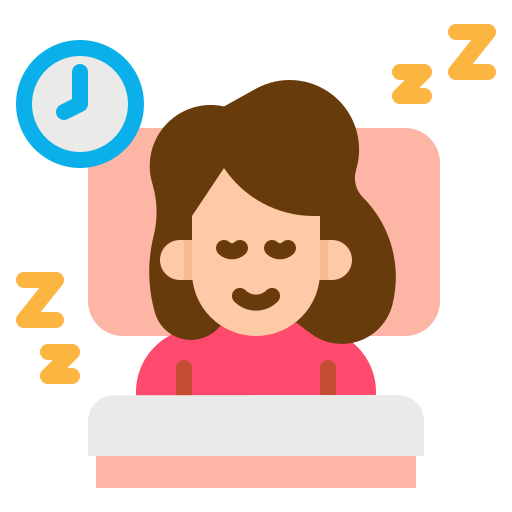

Sleep
- Stick to a sleep schedule of the same bedtime and wake up time, even on the weekends. Consistency makes it much easier to fall asleep and wake easily.
- Practice a bedtime routine. While this is rarely assessed formally in research studies, one study incorporated a routine of personal care, lights out, and reduced sources of noise up to two hours before the desired sleep time as part of a multiphase sleep treatment intervention that effectively improved duration of sleep for a cohort of nursing home patients.
- If you have trouble sleeping at night, avoid naps, especially in the late afternoon. However, short naps lasting approximately 20 minutes can help alleviate daytime fatigue, sleepiness, and even provide cognitive benefit. Nap duration over 30 minutes is more likely than shorter nap duration to produce sleep inertia, a period of reduced alertness and cognitive performance after waking
